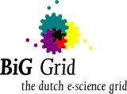
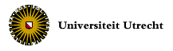
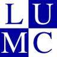

© 2010 CT2I : Cell Tomography Intuitive Interface
Version : 0.1
Developers : S. Madougou and A. Benabdelkader (BiG-Grid)
Collaborators : M. N. Lebbink and W. J. C. Geerts (UU)
Web Site : CellTom home page.
  